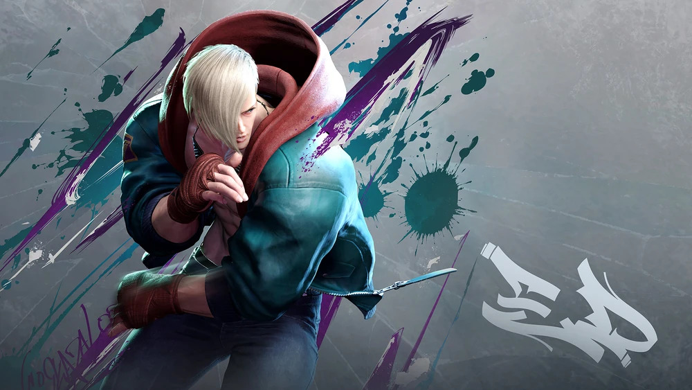
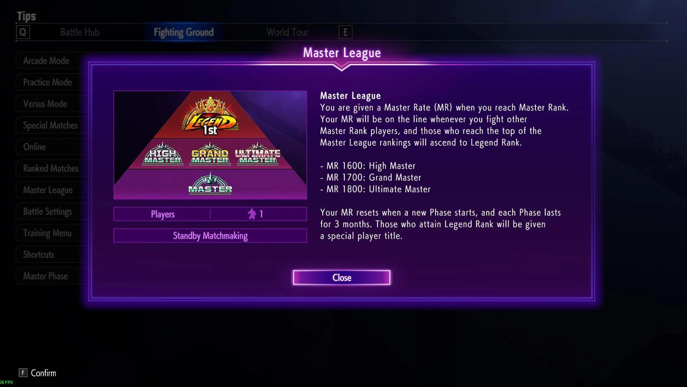
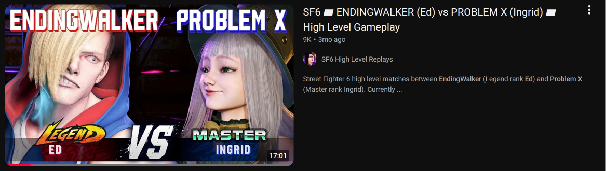

So I recently picked up Street Fighter and its latest installment Street Fighter 6 in June. I've always been a big fan of the series as a spectator but this was my first time picking up the sticks myself. I bought myself a leverless controller and locked in the coolest character in the game.

I'd like to use this page from here on out, documenting my journey. I've been playing for a while so my starting point right now is Diamond 2. I want to try and play every day. My first goal is to make it to Master rank. However, I have bigger goals. Within the Master rank there is High Master (1600 MR), Grand Master (1700 MR), Ultimate Master (1800 MR), and Legend (2000+ MR). One step at a time but I would like to make it to Legend with Ed.


Going to vod review this set and see what notes I can take to add to my own gameplay. I specifically chose a matchup I was struggling with. The character Ingrid, is a defensive zoner and as a player I have always found this archetype hard. I like to cover space the opponent might move into but defensive zoners usually try and take the free space behind them to create more distance between you and them. Opposed to closing the gap.